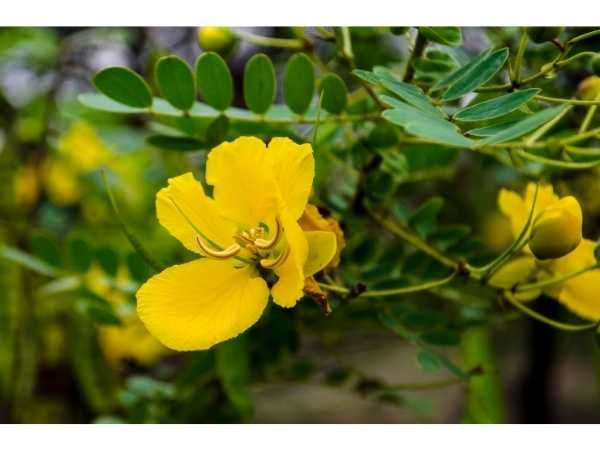

Senna auriculata
Common Names: Avarampoo, Tanner's Cassia, Avaram Senna, Matura Tea Tree
Local Name: Avarampoo (Tamil), Tarwar (Hindi), Tangedu (Telugu)
Family: Fabaceae (Legume family)
Origin: India and Sri Lanka; native to the Indian subcontinent
Plant Type: Shrub, 1–2 meters (can reach 3 m in ideal conditions)
Variety: Senna auriculata — single species; regional ecotypes vary in flower size
Average Lifespan: 8–15 years; rejuvenates well with pruning
| Growth Habit | Much-branched, spreading shrub; semi-deciduous; profuse flowering habit |
| Plant Size | 1–2 meters commonly; up to 3 meters in favorable conditions |
| Leaves | Paripinnately compound, 8–12 pairs of oblong leaflets (1.5–2.5 cm), with distinctive ear-shaped stipules |
| Flowers | Bright golden-yellow, 3–4 cm diameter, in axillary and terminal racemes; showy and abundant |
| Flower Characteristics | 5 petals, slightly unequal; 10 stamens (7 fertile, 3 staminodes); mildly fragrant; attracts bees |
| Fruit | Flat, thin, papery pods, 7–12 cm long, containing 10–20 seeds |
| Fruit Color | Green when young, turning brown and papery when mature |
| Seed Characteristics | Small, flat, brown seeds; hard seed coat; benefit from scarification before sowing |
| Root System | Deep taproot with lateral roots; nitrogen-fixing root nodules (legume family) |
| Climate | Tropical to semi-arid; extremely heat and drought tolerant |
| Temperature Range | 25–45°C; thrives in extreme heat; tolerates mild frost briefly |
| Rainfall Requirement | 300–1200 mm annually; thrives in dry zones; highly drought-resistant |
| Soil Type | Grows in poor, sandy, rocky, or laterite soils; tolerates degraded land |
| Soil pH Preference | 5.5–8.0 (highly adaptable; tolerates alkaline soils) |
| Sun Requirement | Full sun; flowers best in direct sunlight; tolerates partial shade |
| Spacing | 1.5–2 meters between plants; closer for hedge planting (1 m) |
| Irrigation Method | Minimal irrigation needed; water only during prolonged drought in first year |
| Water Requirement | Very low; one of the most drought-tolerant medicinal shrubs |
| Can it Grow in Pots? | Yes, in large pots (20+ liters); prune to maintain compact shape; flowers well in containers |
| Fertilizer Schedule | Minimal; once or twice a year with organic matter; nitrogen-fixing roots reduce fertilizer needs |
| Recommended Organic Fertilizers | Light compost or FYM at planting; self-sufficient once established due to nitrogen fixation |
| Pesticide Frequency | Rarely needed; naturally pest-resistant |
| Recommended Organic Pesticides | Neem oil if needed; plant itself has insecticidal properties |
| Mulching Practice | Optional; dried leaf litter provides natural mulch; not essential for this hardy species |
| Training System | Natural bush form; can be trained as hedge or shaped with pruning |
| Pruning Time | After main flowering season; hard prune in late winter to rejuvenate |
| How to Prune | Cut back to 30–50 cm for rejuvenation; tip-prune for bushier growth; remove spent flower clusters |
| Common Pests | Generally pest-free; occasional leaf-eating caterpillars, pod borers |
| Common Diseases | Powdery mildew in humid conditions; root rot in waterlogged soil (rare) |
| Disease Prevention & Remedies | Good air circulation; avoid waterlogging; extremely resilient plant with few disease issues |
| Flowering Months | September–February (main season); can flower sporadically year-round in tropics |
| Fruiting Season | December–March; pods mature 2–3 months after flowering |
| Days to Harvest | Flowers harvestable from 1st year; peak flowering from 2nd year onwards |
| Harvest Indicators | Harvest flowers when fully open in early morning; bright yellow with maximum fragrance |
| Average Yield per Plant | 500 g–2 kg dried flowers per plant per season; prolific bloomer |
| Pollination Type | Insect pollination (buzz pollination by bees) |
| Pollination Notes | Requires buzz pollination; carpenter bees and large bees are primary pollinators; vibrate anthers to release pollen |
| Pollination Details | Buzz-pollinated; poricidal anthers require vibration by large bees to release pollen |
| Propagation by Seeds | Soak seeds in hot water (80°C) for 5 minutes or scarify; germinates in 7–15 days; easy from seed |
| Propagation by Cuttings | Semi-hardwood cuttings possible; root in 4–6 weeks; seeds are more reliable |
| Propagation by Grafting | Not practiced; direct seeding or nursery-raised seedlings are standard methods |
| Water Usage | Very low; thrives in arid and semi-arid conditions without irrigation |
| Soil Conservation Practices | Nitrogen-fixing legume; improves degraded soils; used in wasteland reclamation |
| Organic Practices Used | Naturally organic; requires no chemical inputs; leaf litter enriches soil nitrogen |
| Companion Plants | Neem, moringa, vetiver grass; used in agroforestry and wasteland restoration |
| Biodiversity Benefits | Important nectar source for bees; supports pollinator populations; used in ecological restoration |
| Commercial Production Regions | Tamil Nadu, Andhra Pradesh, Karnataka (India); Sri Lanka; wild-harvested and cultivated |
| Market Uses | Dried flowers for herbal tea, flower powder, bark for tanning leather, traditional medicine |
| Processing Uses | Avarampoo tea, flower powder capsules, herbal face packs, bark extract for leather tanning |
| Market Value (Approx.) | ₹200–500 per kg (dried flowers); ₹100–300 per 100g (herbal tea packs) |
| Symbolism | Tamil Nadu's state flower; symbol of traditional Tamil medicine and natural beauty |
| Traditional Uses | Central to Siddha medicine for diabetes management; flowers used in traditional beauty treatments; bark historically used for tanning leather (hence "Tanner's Cassia") |
| Anxiety & Sleep | Avarampoo tea has mild calming properties; traditionally consumed as an evening beverage |
| Immune Support | Rich in antioxidants and flavonoids; supports overall immune function |
| Anti-inflammatory Properties | Flower extracts show significant anti-inflammatory activity; used for skin inflammation |
| Heart Health | Traditional use for managing blood sugar and cholesterol; supports metabolic health |
| Digestive Health | Flower tea aids digestion; mild laxative properties; used in Siddha medicine for constipation |
Disclaimer: Information provided is for educational purposes only and not a substitute for medical advice.
Add your field observations here.